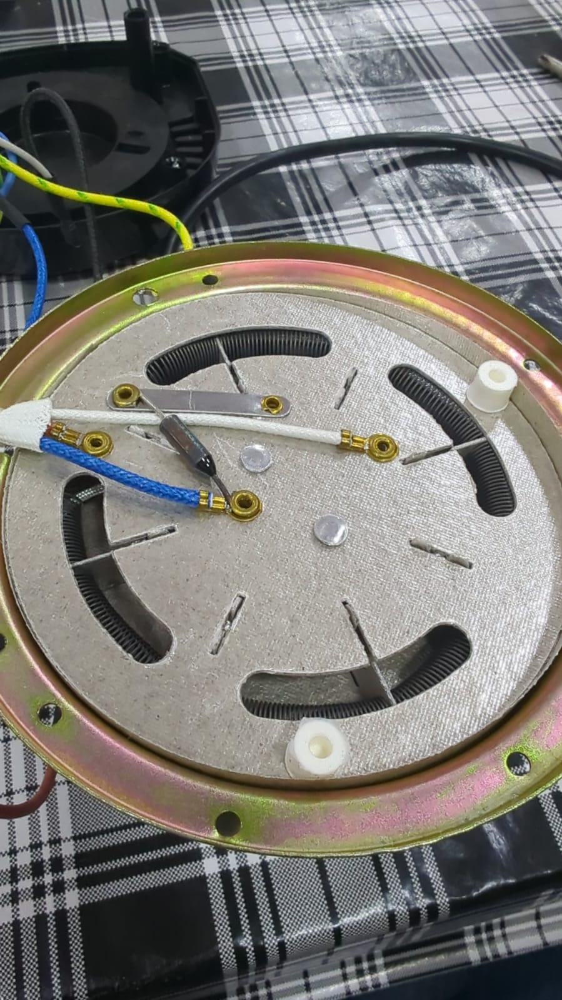
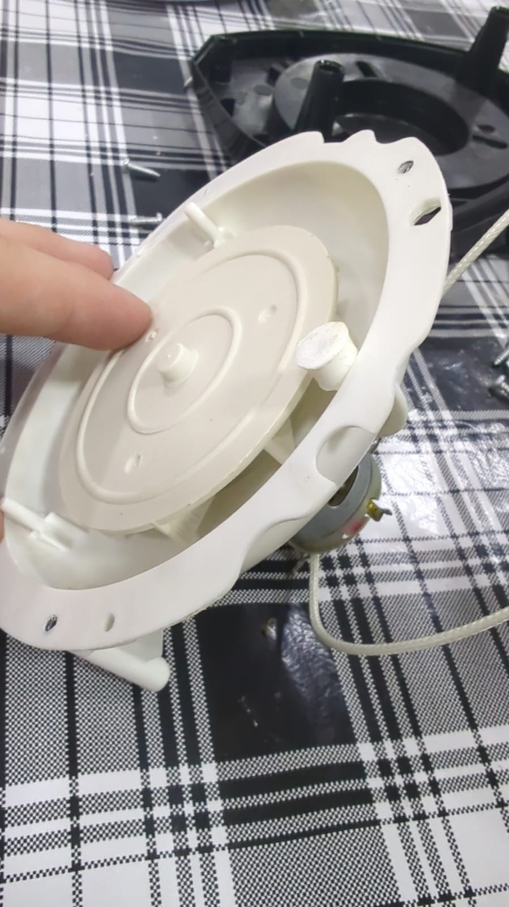

Registro · Semana 01
Base do protótipo e primeiro diagnóstico


Na primeira semana, o foco foi entender profundamente a estrutura interna da pipoqueira elétrica que servirá como base do torrador automatizado. Em vez de partir diretamente para a automação, a equipe dedicou o tempo à análise do equipamento para mapear como o ar quente é gerado, como ele percorre a câmara e quais partes têm papel central no processo térmico.
Estudo da parte interna
Durante a desmontagem, observamos a presença da resistência elétrica, do ventilador, do circuito de aquecimento, da estrutura da câmara e dos pontos em que o ar é empurrado para dentro do sistema. Esse mapeamento foi essencial para entender onde a temperatura realmente muda e onde a instrumentação precisa ser instalada para medir de forma confiável.
O que foi identificado
O principal ponto de atenção foi a relação entre a resistência e o fluxo de ar. A máquina foi projetada para aquecer rapidamente o ambiente interno e empurrar esse ar pela câmara, mas esse mesmo fluxo cria zonas com temperatura diferente ao longo do percurso. Isso explica por que a posição do sensor não pode ser escolhida de forma intuitiva: ela precisa representar o ponto em que a massa de café será efetivamente aquecida.
Além disso, também estudamos a forma como o sistema é alimentado, o isolamento térmico da estrutura e os componentes que podem interferir na leitura dos sensores. Essa investigação serviu como base para decidir quais modificações seriam realmente necessárias e quais partes poderiam ser mantidas sem comprometer o funcionamento original.
Decisão de arquitetura
Com esse diagnóstico, ficou claro que a maior dificuldade não é apenas gerar calor, mas controlar a distribuição térmica de forma previsível. Em vez de automatizar sem entender a máquina, a equipe decidiu usar a primeira semana para validar a base física do sistema, confirmar o melhor ponto de medição e estabelecer a estratégia de atuação da potência e do fluxo de ar.
O que ficou em aberto
Falta validar a resposta térmica em operação real com grãos e confirmar qual ponto interno oferece a melhor referência para o controle. Também será necessário analisar o comportamento do sistema em diferentes potências e verificar como o equipamento reage ao aumento de carga e ao tempo de torra. Esses dados vão orientar a próxima etapa: a instrumentação e a lógica de controle.